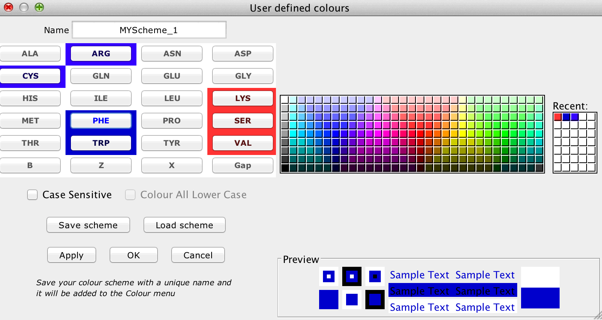

User Defined Colours

You may define any number of new colour schemes, each with a unique
name.
Each of the residues in a colour scheme
may be assigned any chosen colour.
Select one or more
residues, then select the desired colour.
Use Ctrl-click to
select multiple residues, or click then Shift-click to select a
block.
Note that the currently selected buttons are
highlighted by a lighter text colour.
The Case Sensitive option allows you to choose distinct colours for upper and lower case residue codes.
The Colour All Lower Case option allows you to apply a selected colour to all lower case residues.
Click Apply or OK to set your new
colours on the active alignment window.
Click Cancel
to undo your changes if you pressed the Apply
button.